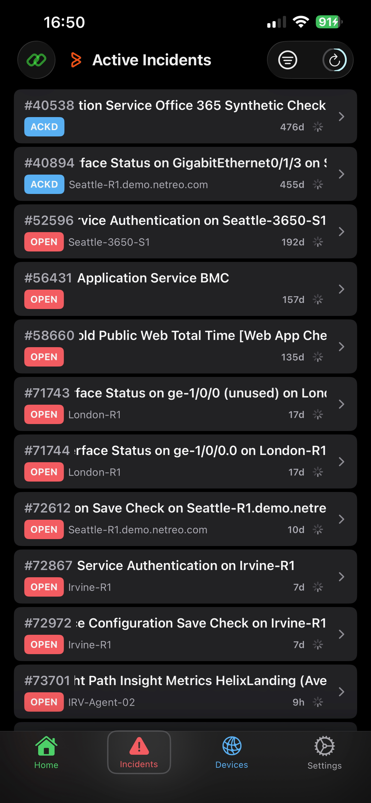

1 Getting Started
- Add a server: Go to Settings > tap Add Manually to enter your BHNM server URL, API token, and PIN (required for SaaS).
- QR setup: Tap Scan QR in Settings to scan a
benem://config link from your administrator. - Test connection: Tap Test on the server config screen to verify before saving.
2 Home Dashboard
- Status cards show active incidents and total devices at a glance.
- Incident ticker scrolls the 3 latest open incidents across the screen.
- H / S / T / A summary cards: Hosts, Services, Thresholds, Anomalies with color-coded alarm counts.
- Drill Down into Categories, Sites, or Business Workflows for grouped alarm views.
3 Managing Incidents
- The Incidents tab lists all active incidents with status badges.
- Tap any incident for full details, related alarms, and device info.
→
Swipe right to Acknowledge or Unacknowledge an incident (action depends on current status)
4 Devices & Performance
- The Devices tab lists all monitored devices.
- Tap a device for a detail view with a header card showing the device icon, name, IP, category, site, and a mini latency chart (last 24 hours).
- The Performance section groups metrics by category (Latency, CPU, Disk, Memory, Interfaces). Tap any metric to expand its chart.
- CPU Cores are shown as a combined multi-line chart with up to 4 cores in distinct colors.
- All performance charts show the last 24 hours of data.
5 Understanding Alarm Colors
Badge colors follow the BHNM convention for monitoring check health (Hosts, Services, Thresholds, Anomalies):
| OK | Healthy |
| WARNING | A warning threshold has been exceeded |
| CRITICAL | A critical threshold has been exceeded or a Service Check has failed |
| ACKNOWLEDGED | An incident has been acknowledged |
| UNKNOWN | A Service Check state cannot be determined (service checks only) |
6 Auto-Refresh & Notifications
- Data refreshes automatically (default: every 2 minutes, configurable 30s–5min in Settings). The countdown ring in the toolbar shows time until next refresh.
- Tap the ring or pull down on any list to refresh immediately.
- Push notifications (optional): Enable per server in the server configuration with your middleware URL and webhook secret. Receive real-time alerts even when the app is closed.
- Tapping a notification jumps directly to the incident details.
Navigate between sections using the bottom tab bar